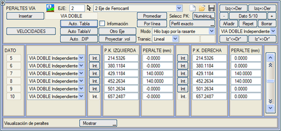
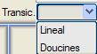
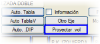
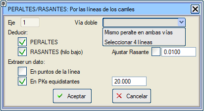
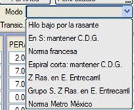
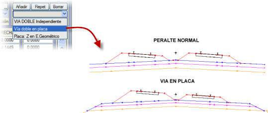
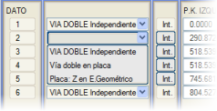

| |
|
HAT DEVERLERİ
|
Genel Bilgiler
.dip tablosu kullanılarak otomatik hesaplama .tpe tablosuna göre deverler Hıza göre bölümlendirilmiş deverler Başka bir eksenden izdüşümle elde edilen dever Çizgiye göre deverler Ortalama Al Dever hesaplama modları Alçak
ray kırmızı kotta
S kurplarında ağırlık merkezini koru Fransız Yönetmeliği Kısa geçiş eğrilerinde ağırlık merkezini koru Kırmızı kotu hat aralığı eksenine göre S şeklindeki kurp grupları, kırmızı kotu hat aralığında koru Meksika Metrosu Yönetmeliği Genel Bilgiler  Demiryollarında deverler milimetre cinsinden verilir. Demiryollarında deverler milimetre cinsinden verilir. Aliymanda sıfırdır ve kurpta dış rayın yükseltilmesiyle dever eksenine göre uygulanır. Ancak, anlaşma gereği, sağa kurplarda pozitif ve sola kurplarda negatif değerle gösterilir. Demiryolları için deverler menüsünün işleyişi, karayolları için deverler menüsüne çok benzer, ancak ilk durumda deverleri otomatik olarak ve aşağıdaki paragraflarda açıklandığı gibi beyan etmenin ve hesaplamanın birkaç yolu vardır. 
.dip tablosu kullanılarak otomatik hesaplama [Oto DIP] düğmesine basıldığında, deverler, .dip tablosunda tanımlanan parametreler kullanılarak, yarıçap, seyir hızı, mod ve zorunlu dever değerleri kullanılarak otomatik olarak hesaplanır. Dever rampaları, hesaplanan geçiş eğrilerinin uzunluğuna karşılık gelir. İki aliyman arasında geçiş eğrisi yoksa, tablo, .dip tablosundan alınan gerekli uzunluğa göre geçişi aşağıdaki şekilde hesaplamaya çalışır:
Dever rampalarının giriş ve çıkışını yumuşatan Doucine tipi geçiş için, parabolün KV'si ve maksimum uzunluğu yapılandırılabilir. .tpe tablosuna göre deverler Demiryolu eksenleri durumunda, genellikle deverler, eksene bağlı .dip tablosu kullanılarak hesaplanır. Yine de, çok özel durumlar için, karayollarında olduğu gibi .tpe dosyalarını kullanmak da mümkündür. Örnek olarak, demiryolları için tipik bir tablo yapılandırması içeren FER.tpe ve FFCC.tpe kütüphane dosyaları sunulmaktadır: # D.Y. DEVER TABLOSU normal hat açıklığı
# Tablodaki maksimum P-r veri sayısı = 100 # İlk veriden daha büyük yarıçap için # belirtilen değerde bombe uygulanır. # İkinci ve sonraki veriler için # dever değeri tablodan enterpole edilir: # ... yarıçap >= ... için dever ... # ------ ---- ------ P-r 0. 6000. P-r 0. 5700 P-r 20. 4662 P-r 50.0 3544 P-r 80.0 2694 P-r 90.0 2048 P-r 110.0 1557 P-r 130.0 1184 P-r 160.0 900 P-r 160.0 0 # enterpolasyon ve hassasiyet # ------ ---- Inter 1.0 yorumlu, enterpole etmez # aliymandaki bombe değeri (2 - 2.5) # ------ ---- Bom 0.0 # kurptaki maksimum dever (160 mm) # ------ ---- Maxp 160.0 # S şeklindeki klotoidlerin # sonsuz noktasındaki dever (0 - 2) # ------ ---- Sbo 0.0 # tepe klotoidlerinde veya kısa kurplarda # minimum sabit dever uzunluğu # ------ ---- Lmcur 30.0 # klotoidsiz aliyman-kurp # minimum geçiş uzunluğu. Aliymandaki kesir (daha az dever) # uzunluk = L0 + L1 * kurp_deveri # ------ ---- ---- Rmtr 30.0 0.0 # klotoidsiz aliyman-kurp # minimum geçiş uzunluğu. Kurptaki kesir (daha fazla dever) # uzunluk = L0 + L1 * kurp_deveri # ------ ---- ---- Cmtr 30.0 0.0 # klotoid içinde bombe geçişi (0) # veya yarısı içeride yarısı dışarıda (1) # D.Y.'da bombe geçişleri yoktur # ------ ---- Trbo 1 # bombe geçişinin otomatik düzeltilmesi ? evet = 1 # D.Y.'da bombe geçişleri yoktur # ------ ---- A 0 # TABLOYU (FIN) İLE BİTİRMEK ZORUNLUDUR # ------ FIN Demiryolları için .tpe dosyaları aşağıdaki özelliklere sahiptir:
Hıza göre bölümlendirilmiş deverler DEVERLER menüsünde birbiriyle ilişkili iki seçenek bulunur:
Başka bir eksenden izdüşümle elde edilen dever Çift hatlı demiryolları için, deverler menüsünde, her bir hat için, başka bir eksenden yansıtılmış bir dever kanunu (BOYKESİT'in [.vol Yansıt] seçeneği tarzında) türetmeye olanak tanıyan bir yardımcı program bulunur. Bu işlevsellik, iki tek hatlı eksenden tek bir çift hatlı eksen oluşturmak için kullanışlıdır. Çizgiye göre deverler Rayları temsil eden iki 3B çizgiden dever ve/veya kırmızı kot kanununu çıkarmaya olanak tanır. Dever, milimetre cinsinden kot farkından çıkarılır. Kırmızı kot için ikisinden en düşük kot alınır (alçak ray). Veriler, ilk çizginin noktalarından veya enkesit aralıklarından çıkarılabilir. Kırmızı kotun parabollerle otomatik olarak ayarlanması yapılabilir.  Çift hat deverleri için iki seçenek vardır: iki çizgi seçerek her iki hatta aynı deveri uygulamak veya sol ve sağ deverleri ayrı ayrı hesaplamak için 4 çizgi kullanmak. Ortalama Al Bu araç, örneğin Çizgiye göre seçeneğiyle elde edilen bir dever kanunundan yola çıkarak yeni bir dever kanunu oluşturur; aliymanlarda sıfır değeri atar ve kurplarda, her birinin içinde elde edilen deverlerin ortalama değerini atar. Dever hesaplama modları ISTRAM®/ISPOL® demiryolu projelerinde deverlerin hesaplanması için çeşitli modları destekler:  Alçak ray kırmızı kotta Kırmızı kot, kurbun iç rayına uygulanır ve dış ray deveri oluşturmak için yükselir. Bu, varsayılan olarak ayarlanan hesaplama modudur. Bu modun işleyişine örnek olarak, yatay bir kırmızı kota ve planda aşağıdaki tekil noktalara sahip bir eksen bölümü varsayalım:
Bu uygulama şekli, yatay bir kırmızı kot için, trenin ağırlık merkezinin KM=1000'den KM=1200'e indiğini ve buradan KM=1400'e yükseldiğini varsayar. S kurplarında ağırlık merkezini koru Bu modda, önceki örneğin davranışı aşağıdaki gibi olacaktır:
Bu şekilde, her iki ray da tüm geçiş boyunca kırmızı kotun üzerindedir (yani, alçak ray kırmızı kottan "ayrılır"), ancak bu sayede trenin ağırlık merkezinin, son dever daha düşükse düzgün bir şekilde inmesi veya tersi durumda yükselmesi sağlanır, S'nin merkezinde bir minimum kottan geçmeden. Fransız Yönetmeliği Fransız dever yönetmeliği, aşağıdaki kriterle eksenin balast hacmini azaltmayı hedefler (burada p dever, Zkırmızı kırmızı kot ve D ray ile geometrik eksen arasındaki mesafedir):
İç
alçak rayın kotu = Zkırmızı - p/3
İç yüksek rayın kotu = Zkırmızı + 2p/3
Dış
alçak rayın kotu = Zkırmızı
Dış yüksek rayın kotu = Zkırmızı + p
Dış
alçak rayın kotu = Zkırmızı + (D-0.75)*0.08
Dış yüksek rayın kotu = Zkırmızı + (D-0.75)*0.08 + p  Deverler bu yönetmeliğe göre uygulandıktan sonra, koruyucu tabakanın eğimleri Fransız yönetmeliğine göre oluşturulmalıdır. Kısa geçiş eğrilerinde ağırlık merkezini koru Bu durumda ayrıca maksimum rampa da verilmelidir (varsayılan olarak 1:300, yani 3.33 mm/m). Bu değer belirlendikten sonra, program dever rampalarının bu değeri aşıp aşmadığını kontrol eder. Bu durumda, alçak ray geçiş sırasında deverin yarısı kadar inerken diğer ray aynı miktarda yükselir. Böylece kurpta toplam dever korunur, ancak rampa yarıya düşer. Bu durumda, kırmızı kotun kotu, iki rayın kotunun ortasındadır. Kırmızı kotu hat aralığı eksenine göre Kırmızı kotun kotu, raylar arasındaki orta noktada korunur. Yükselen ray, deverin yarısı kadar yükselir ve inen ray, deverin yarısı kadar iner. Bu davranış, çift hatta, şu seçenekleri kullanırsak maskelenebilir:
S şeklindeki kurp grupları, kırmızı kotu hat aralığında koru İki aliyman arasında bir çift S kurpu içeren bir dizi kurp göründüğünde, deverler, bir rayın deverin yarısı kadar yükselmesi ve diğerinin kırmızı kot kotuna göre diğer yarısı kadar inmesiyle uygulanır. Bir kurp ve karşı kurp arasında bir aliyman olsa bile (bu aliyman 10 cm'den küçük olduğu sürece) bir çift kurp, S kurpları olarak kabul edilir. Meksika Metrosu Yönetmeliği Bu mod, Fransız yönetmeliğine benzer, çift hat durumlarında şunlara sahip olacağız: İç_Alçak_Ray_Kot = Zkırmızı - p/2 (p=dever) İç_Yüksek_Ray_Kot = Zkırmızı + p/2 p değerinden bağımsız olarak: Dış_Alçak_Ray_Kot = Zkırmızı Dış_Yüksek_Ray_Kot = Zkırmızı + p Daha sonra Koruyucu Tabaka'da, Koruyucu Tabakanın eğimlerini oluşturan "Fransız Yönetmeliği" düğmesi de kullanılabilir, böylece (100mm)'den büyük devere sahip kurplar için koruyucu tabaka kurbun içine doğru tek eğimli hale gelir. (Deverleri tanımladıktan sonra kullanılmalıdır). Çift hat için dever Bağımsız çift hat Her iki hatta da seçilen mod uygulanır. Plakalı çift hat Bu seçenekle, dört ray aynı enkesit düzlemine yerleştirilebilir ve kırmızı kotun kotunu dördünden en alçak olanı korur. 
Plakalı çift hat, kot geometrik eksende Dört ray hizalanır ancak kırmızı kotun kotu geometrik eksene uygulanır. Çift hattaki dever seçenekleri, dever değerlerinin tanımlandığı KM'lere göre tanımlanabilir.  |
 KM
bölümlerine göre bir dizi hız tanımlamaya olanak tanıyan bir menüye
geçiş yapar.
KM
bölümlerine göre bir dizi hız tanımlamaya olanak tanıyan bir menüye
geçiş yapar.